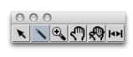

Edition Basics
Double click on a BPF or BPC to open the editor window . The editor opens along with a palette . This palette has a number of edition tools, which allow to add, delete and manipulate points within the editor.

Adding / Deleting Points
The following operations are performed with the pointer  .
.
To add points on the object, Cmd click in the editor window at the desired point position.
Note that the coordinates of the pointer are displayed in the upper part of the editor window.

In a BPC, points can be added anywhere in the x / y plane, so that the new points are automatically inserted at the end of the points list . To add a point between two existing points, click precisely on the curve segment.
To delete points :
select a region of the object
press
Backspace.

Drawing in BPFs vs. BPCs
 | The "pen" tool allows to draw on the BPF or BPC Editor. To draw a curve, select it press the mouse button while moving on the editorin the editor. |

With a BPC , points are added at the end of the current curve.

With a BPF , points are only added or moved to the closest x -coordinate from the cursor.
Use CMD + click in order to activate the selection mode while
pen
mode tool is selected.
Moving Points
The location of one or several points can be modified manually :
- with a click and drag
- with a selection and the
→keys.

To access and edit the coordinates of a point :
Note : floats are truncated depending on the object "decimals" parameter. If "decimals" = 0, coordinate values are rounded to the closest integer. |  |

To change the position of a curve within the editor's surface :
select the curve tool

click and drag the object in the editor.
Extra Edition
 | To change the colour of a curve :
Assigning specific colours to curves may be especially useful in BPF and BPC-libs, which can have several BPFs and BPCs. |